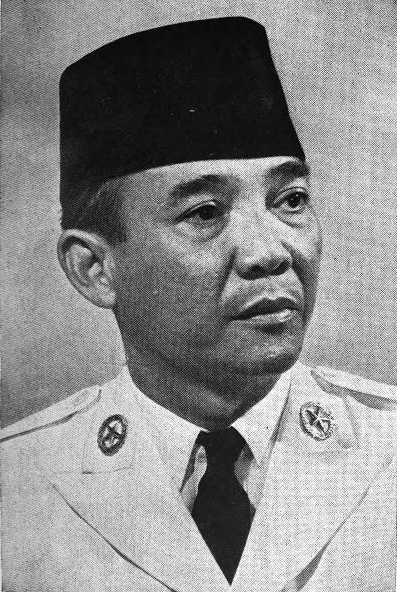
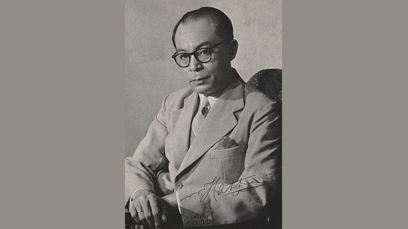
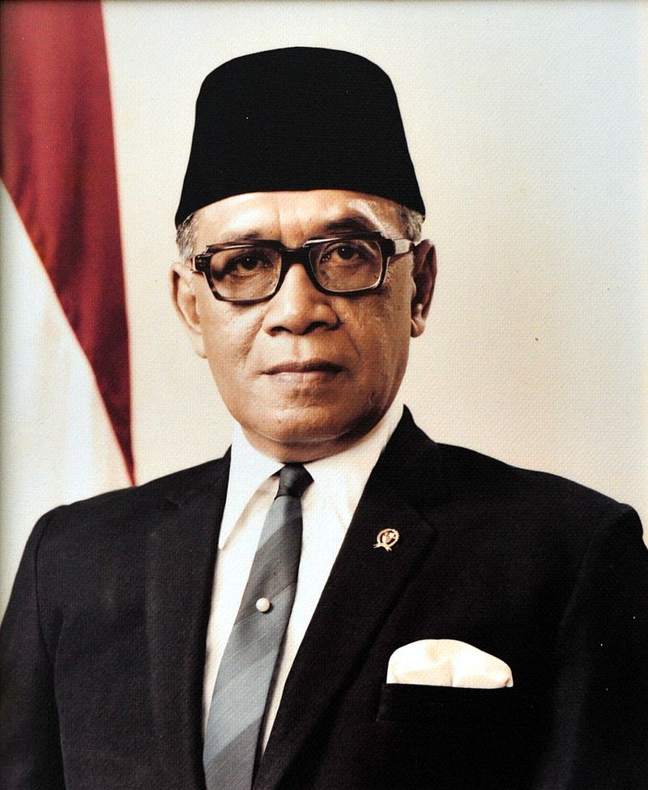
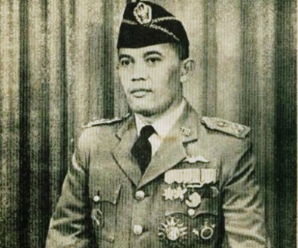
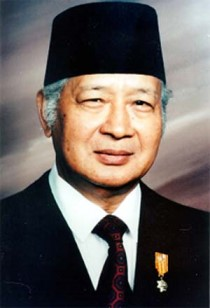
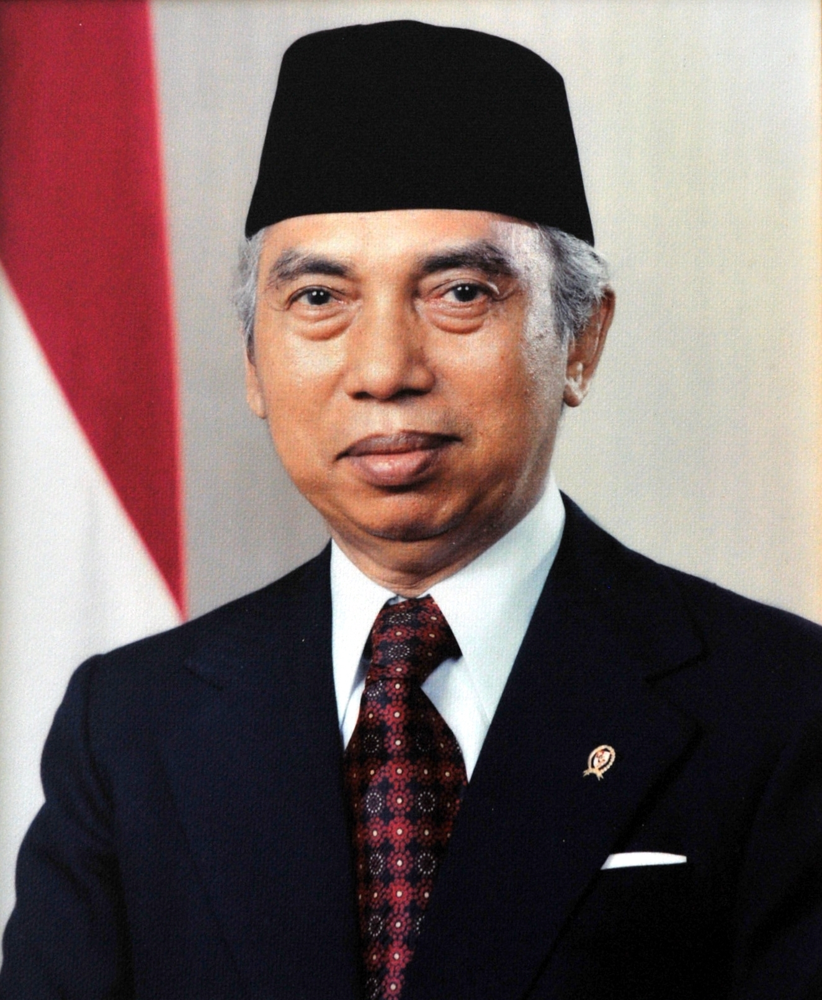

Soekarno (1901-1970)

Soekarno memiliki panggilan akrab Bung Karno. Seluruh dunia pun pasti mengenal sosok karismatik ini. Beliau lahir di Blitar pada 6 Juni 1901. Ayah beliau bernama Raden Soekemi Sosrodihardjo dan ibunya bernama Ida Ayu Nyoman Rai. Beliau hanya menghabiskan beberapa tahun hidup bersama orang tuanya. Masa kecil Soekarno kebanyakan dihabiskan di Surabaya karena pada saat itu Blitar belum terdapat banyak sekolah yang memadai.
Riwayat Pendidikan Soekarno:
- Pendidikan dasar di Eerste Inlandsche School (EIS) dan dipindahkan ke Europeesche Lagere School (ELS) di Mojokerto.
- Melanjutkan sekolah setaraf SMP/SMU yaitu Hoogere Burger School (HBS) di Surabaya, pada saat ini Bung Karno mulai terlibat dalam aktivitas pergerakan Nasional
- Menempuh pendidikan tinggi di Technische Hooge School (THS) Bandung, yang sekarang dikenal sebagai ITB.
Pada 1927, Bung Karno mendirikan Partai Nasional Indonesia (PNI). Munculnya PNI di masa penjajahan Belanda jelas dianggap membahayakan praktek Kolonialisme. Oleh karena itu, Bung Karno serta bersama beberapa tokoh pergerakan nasional lainnya ditangkap oleh pemerintahan kolonial Belanda pada tahun 1930. Mereka diadili dan Soekarno dijatuhi hukuman penjara selama 4 tahun. Akan tetapi, berkat pledoinya yang fenomenal berjudul Indonesia Menggugat, beliau dibebaskan pada tahun 1931.
Setelah dibebaskan, Soekarno bergabung dengan Partai Indonesia (Partindo). Namun setelah itu, Soekarno ditangkap lagi pada tahun 1933 dan dibuang ke Ende (Flores), dan lalu dipindahkan ke Bengkulu. Beliau baru kembali bebas pada masa penjajahan Jepang ada 1942.
Pada masa penjajahan Jepang (1942-1945), Bung Karno memimpin organisasi Pusat Tenaga Rakyat (Putera) bersama Bung Hatta, Ki Hajar Dewantara, dan K.H Mas Mansyur. Selain itu, beliau juga menjadi Ketua Cuo Sangi In (Dewan Penasihat Pusat). Dalam kondisi politik tersebut, Soekarno terpaksa harus bekerja sama dengan pemerintah pendudukan Jepang. Saat berpidato dalam pembukaan pembacaan teks proklamasi kemerdekaan, Soekarno mengatakan, meski sebenarnya bekerja sama dengan Jepang, sebenarnya kita percaya dan yakin mampu mengandalkan kekuatan sendiri.
Setelah Jepang menyerah tanpa syarat pada Sekutu, pada tanggal 17 Agustus 1945, Soekarno bersama Moh. Hatta memproklamasikan Kemerdekaan Indonesia. Peristiwa monumental inilah yang melahirkan sebutan Soekarno sebagai Bapak Proklamator. Bapak yang amat berjasa mengakhiri penjajahan bangsa asing yang mempersatukan suku-suku bangsa dalam wadah negara Indonesia. Dalam sidang PPKI keesokan harinya, Soekarno diangkat sebagai presiden RI yang pertama.
Setelah RI merdeka, banyak kiprah Presiden Soekarno dalam upaya mempertahankan kemerdekaan Indonesia. Begitu pula, Presiden Soekarno makin diperhatikan oleh bangsa sendiri dan bangsa lainnya. Salah satu aktivitas politik fenomenal lainnya yaitu Soekarno dianggap berhasil menghimpun dan mempersatukan bangsa-bangsa Asia dan Afrika dalam Konferensi Asia Afrika (KAA) di Bandung pada tahun 1955.
Soekarno memiliki tiga orang istri dan dikaruniai delapan orang anak. Istri pertamanya yang bernama Fatmawati, dan bersamanya melahirkan Guntur, Megawati, Rachmawati, Sukmawati, dan Guruh. Istri keduanya bernama Hartini, dan dari hasil pernikahannya memiliki anak yang bernama Taufan dan Bayu. Istri yang ketiga bernama Ratna Sari Dewi, beliau merupakan keturunan Jepang yang mempunyai nama asli Naoko Nemoto. Dari hasil pernikahannya mereka memiliki seorang anak bernama Kartika.
Pada akhir masa Demokrasi terpimpin (1959-1965), karier Soekarno mulai meredup, dan kemudian digantikan oleh tokoh lain pada Masa Orde Baru (1966-1998). Kesehatan Presiden Soekarno sudah mulai menurun sejak Agustus 1965. Ia beberapa kali menjalani perawatan rumah sakit di dalam dan luar negeri. Bung Karno akhirnya wafat pada tanggal 21 Juni 1970 dan jenazah beliau dimakamkan di kota Blitar.

Moh. Hatta merupakan salah satu tokoh terkemuka bangsa Indonesia. Ia bersama Soekarno sering disandingkan sebagai “Dwitunggal” di awal kemerdekaan Indonesia. Dalam teks proklamasi sering kali kita mendengar dua kata akhir, Soekarno-Hatta. Dalam perjalanan sejarah peran Soekarno-Hatta sangat menonjol sebagai Dwitunggal yang melengkapi. Keduanya menjadi simbol persatuan dan kekuatan bangsa.
Bung Hatta dikenal sebagai sosok yang jujur, lugu, sederhana, dan cerdas. Beliau lahir pada 12 Agustus 1902 di Bukit Tinggi. Di kota kecil dan tenang ini Hatta dibesarkan di lingkungan keluarga ulama. Pada saat usianya delapan bulan, ayahnya Haji Mohammad Djamil meninggal dunia.
Riwayat Pendidikan Moh. Hatta:
- Memperoleh pendidikan dasar di Sekolah Melayu Fort de Kock, kemudian melanjutkan ke ELS di Padang.
- Ia lalu lanjut menempuh pendidikan MULO (setara SMP di masa penjajahan Belanda). Lalu karena tertarik dengan dunia perdagangan, Hatta melanjutkan sekolah Prins Hendrik School (Sekolah Dagang Belanda) di Jakarta, dan Handels Hooge School (Sekolah Tinggi Perdagangan) di Belanda hingga tamat.
Ketertarikan Hatta pada dunia politik sudah nampak saat ida tengah menempuh pendidikan MULO di Padang. Pada 1916 berbagai perkumpulan pemuda telah muncul di Indonesia, dan Hatta menjadi anggota Jong Sumatra. Di negeri Belanda, Hatta juga dipercaya sebagai ketua Perhimpunan Indonesia pada tahun 1924. Namun, karena gerakan ini dianggap berbahaya oleh pemerintah Belanda, Hatta bersama Nazir Pamuncak, Ali Sastroamidjojo, dan Abdoel Madjid Djojodiningrat. Mereka dihadapkan ke pengadilan pada tahun 1928, tetapi kemudian dibebaskan dari segala tuntutan.
Pada tahun 1932 Moh. Hatta kembali ke Indonesia dan memimpin partai Pendidikan Nasional Indonesia. Karena kegiatan politiknya, Bung Hatta ditangkap Belanda dan dibuang ke Boven Digoel (Papua) pada 1935. Ia kemudian dipindahkan ke Banda Neira (salah satu pulau di kepulauan Banda) pada tahun 1937.
Pada masa pendudukan Jepang, Hatta memimpin kantor Pusat Tenaga Rakyat (Putera) bersama Soekarno, Ki Hajar Dewantara, dan K.H. Mas Mansyur. Kemudian, ia pun sempat berkiprah dalam panitia kecil bentukan BPUPKI yang mempersiapkan konsep dasar negara Indonesia.
Setelah Jepang menyerah kepada sekutu, tanggal 17 Agustus 1945 Moh. Hatta bersama Soekarno memproklamasikan kemerdekaan Indonesia. Keesokan harinya, Moh. Hatta resmi diangkat sebagai wakil presiden RI yang pertama. Pada tahun 1949, Moh. Hatta dipercaya memimpin delegasi Indonesia dalam Konferensi Meja Bundar (KMB) di Den Haag yang membawa hasil pengakuan kedaulatan RIS oleh pihak Belanda.
Pada tahun 1956 Moh. Hatta mengundurkan diri sebagai wakil Presiden RI. Beliau wafat pada 14 Maret 1980 dan dimakamkan di TPU Tanah Kusir Jakarta. Pada tahun 1986, semasa pemerintahan Presiden Soeharto, Moh. Hatta ditetapkan sebagai pahlawan proklamator.

3. Muhammad Yamin (1903-1965)
Muhammad Yamin dikenal sebagai tokoh nasional Indonesia yang cakap sebagai sastrawan, sejarawan, budayawan, politikus, dan ahli hukum. Beliau lahir pada 24 Agustus 1903 di Talawi, Sawahlunto, Sumatra Barat.
Riwayat Pendidikan Muhammad Yamin:
- Menempuh pendidikan dasar di Hollandsch Inlandsche School (HIS) Palembang
- Ia lalu melanjutkan pendidikannya ke Algemeene Middelbare School (AMS) di Yogyakarta. Di lembaga pendidikan ini, Yamin mulai mempelajari sejarah purbakala dan berbagai bahasa seperti Yunani dan Latin. Namun, setelah tamat, niat untuk melanjutkan pendidikannya ke Leiden, Belanda harus diurungkan, sebab sang ayah, Usman Baginda Khatib meninggal dunia. Selanjutnya, ia menapaki kuliah di Rechtskundige Hooge School (Sekolah Tinggi Hukum) di Jakarta dan berhasil memperoleh gelar Meester in de Rechten (Sarjana Hukum) pada tahun 1932.
Pada masa pergerakan nasional, Muhammad Yamin aktif dengan kegiatan berorganisasi dan politik yang ia mulai dengan masuk Jong Sumatra. Ia amat mencita-citakan persatuan bangsa, yang akhirnya tersalurkan lewat Sumpah Pemuda pada 28 Oktober 1928. Dalam peristiwa ini, Yamin berperan dalam menyusun ikrar Sumpah Pemuda.
Menjelang peristiwa proklamasi kemerdekaan, Yamin terpilih sebagai anggota BPUPKI. Dalam sidang BPUPKI, Yamin banyak memainkan peran. Yamin berpendapat agar hak asasi manusia dimasukkan ke dalam konstitusi negara. Ia juga mengusulkan, kelak jika Indonesia merdeka, wilayah Indonesia harus mencakup Serawak, Sabah, Semenanjung Malaya, Timor Portugis, serta semua wilayah Hindia Belanda.
- Setelah Republik Indonesia merdeka, Muhammad Yamin diangkat sebagai anggota Komite Nasional Indonesia Pusat (KNIP). Berturut-turut ia memegang beberapa jabatan negara penting, seperti anggota DPR sejak 1950, Menteri Kehakiman (1951-1952), Menteri Pengajaran, Pendidikan, dan Kebudayaan (1953-1955), Menteri Urusan Sosial Budaya (1959-1962), dan Menteri Penerangan (1962-1963)
- Prof. Muhammad Yamin, S.H. terkenal sebagai sastrawan dan ilmuwan. Cukup banyak buku yang telah ditulisnya, salah satunya berjudul Peta Sejarah yang diterbitkan pada 1956. Yamin mendapat beberapa penghargaan penting dari negara, salah satunya Bintang Mahaputra RI. Tokoh nasionalis ini meninggal dunia pada 17 Oktober 1962 di Jakarta. Beliau dimakamkan di Talawi, tempat asal kelahirannya.

Sri Sultan Hamengkubuwono IX merupakan salah satu sultan dari kesultanan Yogyakarta yang dikenal memiliki jiwa kerakyatan. Walaupun seorang keturunan raja, ia dikenal ramah dan dekat dengan rakyat. Seluruh pengabdiannya ia baktikan bagi rakyat dan negara secara tulus, jujur, tanpa pamrih. Beliau lahir pada 12 April 1912 dari pasangan Sri Sultan Hamengkubuwono VIII dan Raden Ajeng Koestilah.
Riwayat Pendidikan Sultan Hamengkubuwono IX:
- Ia menempuh pendidikan mulai dari Europeesche Leger School (ELS) di Yogyakarta.
- Ia lalu melanjutkan pendidikannya di Meer Uitgebreid Lager Onderwijs (MULO) Semarang, dan Algemene Middlebare School (AMS) di Bandung.
- Ia memasuki perkuliahan Rijkuniversiteit Leiden (sekarang Universitas Leiden, Belanda). Sebelum menyelesaikan kesarjanaannya, ia dipanggil pulang oleh ayahnya dan dinobatkan sebagai Sultan Yogyakarta pada 18 Maret 1940.
Hamengkubuwono IX merupakan tokoh bangsa yang menentang penjajahan Belanda dan senantiasa mendorong kemerdekaan Indonesia. Ketika berita proklamasi kemerdekaan Indonesia dikumandangkan pada 17 Agustus 1945, ia dengan spontan menyatakan Yogyakarta bergabung dengan RI. Dukungan tersebut diumumkan pada 5 September 1945. Kemudian, ketika RI berada pada masa mempertahankan kemerdekaannya dengan kondisi ekonomi yang saat itu sedang memburuk, beliau menyumbangkan kekayaannya sejumlah 6 juta gulden. Hal tersebut dilakukan beliau untuk menjamin roda pemerintahan RI tetap berjalan.
Pada 19 Desember 1948, Belanda melakukan agresi militer yang menyerbu dan menduduki Yogyakarta. Belanda berhasil menawan para pemimpin RI, termasuk Presiden dan Wakil Presiden. Demikian, perlawanan terhadap Belanda terus dilakukan secara gerilya oleh rakyat bersama angkatan senjata. Yogyakarta dapat dibebaskan berkat Serangan Umum 1 Maret 1949 yang digagas Hamengkubuwono IX dan Letkol. Soeharto. Hamengkubuwono IX pun mewakili Pemerintah RI untuk menerima penyerahan kedaulatan Belanda pada 27 Desember 1949 di istana Jakarta.
Semenjak RI merdeka, Hamengkubuwono IX dipercaya menduduki jabatan-jabatan penting negara dan jabatan lainnya. Jabatan-jabatan yang pernah beliau duduki yaitu Gubernur/Kepala Daerah Istimewa Yogyakarta (1945-1988), Menteri Pertahanan dan Koordinator Keamanan Dalam Negeri (1949), Wakil Perdana Menteri (1950-1951), Menteri Pertahanan (1952-1953), Ketua Bapeka (1960-1962), Ketua BPK (1964-1966), Waperdam Bidang Ekuin (1966), Menteri Utama Bidang Ekonomi dan Keuangan (1966-1967), Menteri Negara Ekuin (1967-1973), Wakil Presiden RI (1973-1978). Selain itu, beliau juga pernah menjabat sebagai Ketua Umum KONI Pusat, Ketua Dewan Pembimbing Pariwisata Nasional, dan Ketua Kwartir Nasional Gerakan Pramuka.
Sri Sultan Hamengkubuwono IX meninggal pada 3 Oktober 1988 di Washington D.C., Amerika Serikat dan dikebumikan di pemakaman para sultan Mataram di Imogiri, Kabupaten Bantul, Yogyakarta.
5. Panglima Besar Jenderal Soedirman (1916-1950)
Jenderal Besar Soedirman dikagumi rakyat Indonesia sebagai tokoh bangsa yang dikenal tabah dan gigih berjuang mempertahankan kemerdekaan. Beliau lahir pada 24 Januari 1916 di Purbalingga, Jawa Tengah.
Riwayat Pendidikan Jenderal Besar Soedirman:
- Ia menempuh pendidikan di HIS Purwokerto, dan selanjutnya meneruskan ke Taman Dewasa Taman Siswa
- Ia lalu memasuki Hollandsch Inlandsche Kweekschool (HIK)/Sekolah Guru Bumiputra Muhammadiyah, tetapi tidak tamat.
- Soedirman kemudian mengajar pada sekolah dasar Muhammadiyah di Cilacap. Ia menjadi anggota Muhammadiyah dan aktif dalam berbagai kegiatannya. Ia juga memasuki organisasi pramuka Hizbul Wathan dan terkenal dengan disiplinnya yang keras.
Pada masa pendudukan Jepang, Soedirman tetap mengajar. Ia mengikuti pendidikan ketentaraan dalam Pembelaan Tanah Air (PETA) di Bogor. Seusai pendidikannya, ia diangkat sebagai komandan batalion di Banyumas. Selama menjabat, Soedirman tidak segan memprotes atasannya orang Jepang. Bahkan ia bersama rekan-rekannya melakukan pemberontakan, yang alhasil ia tertangkap dan diasingkan ke Bogor. Namun setelah Indonesia memproklamirkan kemerdekaannya, Soedirman melarikan diri dari pusat penahanan ke Jakarta untuk bertemu dengan presiden Soekarno.
Pada 5 Oktober 1945 Tentara Keamanan Rakyat (TKR) dibentuk. Pada 12 November 1945 para pemimpin tentara di Markas Tertinggi TKR melakukan konferensi dan menetapkan Soedirman sebagai panglima besar TKR. Ia kemudian dilantik dengan pangkat jenderal, dan sejak itu ia giat membina TKR hingga berkembang menjadi Tentara Nasional Indonesia (TNI).
Sebulan kemudian, Sodierman bersama anggota TKR lainnya berhasil menghalau pasukan Inggris dari Ambarawa setelah bertempur selama tiga hari. Terjadinya peristiwa tersebut semakin melambungkan nama Soedirman di kancah politik Indonesia.
Pada 19 Desember 1948, Belanda melancarkan agresi militer kedua. Soedirman mengutus tentara Republik ke luar kota untuk bergerilya. Soedirman memutuskan untuk memimpin gerilya tersebut walaupun beliau sedang dalam kondisi sakit berat. Ia tetap memimpin gerilya memasuki hutan dan gunung selama hampir tujuh bulan. Dengan semakin dipertajamnya perang, bangsa Indonesia mulai memegang inisiatif pertempuran. Belanda semakin terdesak dan barisan pertahanannya banyak yang hancur. Dalam keadaan demikian, dunia internasional semakin gencar mengecam Belanda sehingga mereka terpaksa bersedia mengadakan perundingan dengan pihak Indonesia.
Soedirman amat berjasa memimpin gerilya bangsa Indonesia. Namun, semakin hari penyakitnya semakin parah.ia kemudian pensiun dan pindah ke Magelang. Panglima Besar Jenderal Soedirman akhirnya meninggal dunia pada 29 Januari 1950 di kota itu. Ia kemudian dimakamkan di Taman Makam Pahlawan Semaki, Yogyakarta.

Abdul Haris Nasution dikenal sebagai jenderal besar TNI. beliau lahir di Kotanopan, Sumatera Utara pada 3 Desember 1918. Ia menjadi peletak dasar sistem gerilya dan pahlawan nasional pada masa revolusi mempertahankan kemerdekaan Indonesia.
Riwayat Pendidikan Abdul Haris Nasution:
- Ia menempuh pendidikan dasar di HIS Yogyakarta dan melanjutkan ke HIK di kota yang sama.
- Ia menjalankan pendidikan menengah di AMS Jakarta, lalu setelah lulus, Abdul Haris Nasution kembali ke Sumatra. Ia tidak kembali ke kota kelahirannya, melainkan menjadi guru di Bengkulu.
Di Bengkulu, Nasution tinggal di dekat rumah pengasingan Soekarno. Ia kadang berbicara dengan Soekarno dan mendengarnya berpidato. Ia kemudian pindah ke Tanjung Raja. Disitu ia lanjut mengajar. Namun kemudian Nasution lebih tertarik pada dunia militer. Karena itu, ia berhenti mengajar dan masuk Akademi Militer di Bandung. Pendidikan militernya berhenti sebab Jepang masuk ke Indonesia pada 1942.
Sejak RI merdeka, Nasution kembali terjun kedalam dunia militer. Ia diangkat menjadi Komandan Divisi I Siliwangi Bandung. Pada masa revolusi, ia memerintah Divisi Siliwangi hijrah ke Yogyakarta di tahun 1948. Hal ini dilakukan sebagai wujud pelaksanaan Persetujuan Renville. Di Yogyakarta, Nasution diangkat sebagai Wakil Panglima Besar/Kepala Staf Operasi Markas Besar Angkatan Perang (MBAP). Selanjutnya, ia menjadi Panglima Komando Jawa hingga 1949.
27 Desember 1949 Belanda mengakui kedaulatan Indonesia. Setelah itu, Nasution diangkat menjadi Kepala Staf Angkatan Darat (KSAD). Dalam karier militernya, ia pernah melemparkan rencana restrukturisasi dan reorganisasi di tubuh militer. Namun, hal tersebut telah menimbulkan perpecahan dalam kalangan militer, serta pertentangan dengan partai-partai oposisi di parlemen. Dalam kondisi seperti itu, Presiden Soekarno mencabut jabatan Nasution sebagai KSAD sejak 17 Oktober 1952. Namun karena Nasution dianggap masih memiliki kompetensi kepemimpinan militer, ia kembali ditunjuk sebagai KSAD pada 28 Oktober 1955
Di sekitar tahun 1965, kelompok militan PKI berencana melakukan kudeta pemerintah dan menggantikan Pancasila dengan dasar negara komunisme. Cita-cita PKI banyak mendapat rintangan dari kalangan perwira TNI-AD. Karena itu, pada 30 September 1965, sekelompok tentara yang bergabung dalam gerakan 30 September menculik tujuh orang jenderal, termasuk A.H. Nasution. Dalam pemberontakan tersebut, Nasution lolos dari upaya penculikan dan pembunuhan. Namun, putri beliau yang bernama Ade Irma Suryani tertembak berondongan senjata PKI.
Pasca peristiwa G-30-S/PKI, Abdul Haris Nasution memperoleh jabatan baru yaitu Ketua Majelis Permusyawaratan Rakyat Sementara (MPRS). Selama menjabat, terjadi sebuah peristiwa penting dalam sejarah Indonesia, yaitu bergantinya kepemimpinan kepala negara dari Presiden Soekarno kepada pejabat presiden baru, Jenderal Soeharto pada 12 Maret 1967.
Abdul Haris Nasution termasuk salah satu tokoh bangsa Indonesia yang memiliki banyak peran dan jasa terhadap RI. Pada hari peringatan ABRI 5 Oktober 1997, Nasution dianugerahi pangkat kehormatan jenderal besar bersama Soedirman oleh Presiden Soeharto. Jenderal Besar Abdul Haris Nasution wafat pada 6 September 2000 di Rumah Sakit Angkatan Darat Gatot Subroto, Jakarta. Beliau dimakamkan di Taman Makam Pahlawan Kalibata, Jakarta.

1. Soeharto (1921-2008)
Jenderal Soeharto merupakan tokoh nasional yang cukup banyak tercatat dalam sejarah Indonesia. Ia adalah presiden RI yang menjabat paling lama, yakni sekitar 30 tahun. Ia termasuk salah satu tokoh kontroversi dengan gaya kepemimpinannya. Banyak juga orang yang mencercanya, tapi banyak juga yang memujinya. Bahkan sebelum era orde baru berakhir, ia memperoleh predikat dari MPR sebagai Bapak Pembangunan Nasional.
Soeharto lahir pada 8 Juni 1921 di Desa Kemusuk, dusun terpencil, di daerah Argomulyo, Godean, sebelah barat kota Yogyakarta. Ayahnya bernama Katosudiro dan ibunya bernama Sukirah.
Soeharto tidak seperti anak desa lainnya yang harus bekerja di sawah. Pada usia delapan tahun, ia masuk sekolah namun sering berpindah-pindah. Awalnya Soeharto bersekolah di Sekolah Desa Puluhan, Godean. Lantaran pindah rumah, ia pindah ke sekolah SD Pedes, Kemusuk Kidul.
Setelah menamatkan SD, ia melanjutkan pendidikannya di SMP Muhammadiyah Yogyakarta. Namun karena kekurangan dana untuk melanjutkan ke SMA, ia lebih memilih bekerja. Tetapi, ia tidak kunjung mendapat pekerjaan. Akhirnya ia memutuskan untuk kembali ke kampung halamannya. Kepulangannya memberi berkah tersendiri, sebab Soeharto diterima bekerja di Volk Bank sebagai klerek.
Pada tahun 1940, Soeharto mengawali karier militernya. Ia diterima di sekolah militer Gombong, Jawa Tengah. Ia juga sempat bergabung dengan pasukan kolonial Belanda, KNIL, dan PETA bentukan Jepang. Ia resmi menjadi anggota TKR pada 5 Oktober 1947.
Dalam sejarah, Soeharto tercatat pernah memimpin perebutan Yogyakarta dari kekuasaan tentara Belanda dalam peristiwa Serangan Umum 1 Maret 1949. Selain itu ia juga dipercaya menjadi pengawal Panglima Besar Jenderal Soedirman, dan menjabat menjadi Panglima Mandala dalam pembebasan Irian Barat.
Kiprah Soeharto di dunia militer dan politik mulai bersinar tatkala meletus pemberontakan G-30-S/PKI. Pada 1 Oktober 1965, Soeharto beserta beberapa tokoh nasionalis lain berupaya menumpas kudeta. Keberhasilannya melambungkan nama Soeharto di kancah politik Indonesia. Selanjutnya, Soeharto menerima Surat Pemerintah 11 Maret 1966 (dikenal Supersemar) yang isinya memerintahkan Soeharto mengembalikan stabilitas keamanan dan ketertiban di Indonesia. Suatu saat, peristiwa Supersemar dianggap sebagai tonggak lahirnya Orde Baru. pada Sidang Istimewa MPRS pada 12 Maret 1967, Soeharto diangkat sebagai pejabat presiden dan setahun kemudian dikukuhkan sebagai presiden kedua RI. sejak itulah, Soeharto menjabat Presiden RI selama tiga dasawarsa hingga mengundurkan diri pada 21 Mei 1998.
Seusai mengundurkan diri, Soeharto sering jatuh sakit. Dari hari ke hari, kondisinya makin memburuk. Akhirnya, Soeharto meninggal pada 27 Januari 2008 di Rumah Sakit Pusat Pertamina Jakarta. Tepat pada pukul 10.00 WIB, Soeharto dimakamkan di Astana Giri Bangun, Solo, Senin.

Adam malik dikenal sebagai tokoh nasional yang dikenal sebagai birokrat, diplomat, dan wartawan di Indonesia. Beliau lahir di Pematang Siantar, Sumatera Utara pada 22 Juli 1917. Ayahnya seorang pedagang kaya bernama Haji Abdul Malik Batubara dan ibunya bernama Salamah Lubis.
Adam Malik menempuh pendidikan dasar di HIS Pematangsiantar. Ia kemudian melanjutkan pendidikan di Sekolah Agama Madrasah Sumatera Thawalib Parabek di Bukittinggi. Namun disitu ia hanya bisa menimba ilmu satu setengah tahun saja. Ia lantas pulang kampung dan membantu orang tuanya berdagang.
Adam Malik ingin membaktikan dirinya pada bangsa dan negara. Karena itu, ia merantau ke Jakarta. Pada usia 20 tahun, ia dipertemukan dengan orang-orang yang mulai mengangkat kariernya. Ia bersama Soemanang, Sipahutar, Armijn Pane, Abdul Hakim, dan Pandu Kartawiguna memelopori berdirinya Kantor Berita Antara pada tahun 1937. Pada masa pergerakkan nasional, Adam Malik dipercaya memimpin Partindo Pematang Siantar dan Medan pada 1934-1935. Kemudian pada 194-1941 ia menjadi anggota Dewan Pimpinan Gerakan Rakyat Indonesia (Gerindo) di Jakarta.
Di masa pendudukan Jepang, ia aktif bergerilya memperjuangkan kemerdekaan. Dalam upayanya mencapai kemerdekaan itu, Adam Malik bersama Sukarni, Chaerul Saleh, Wikana, dan beberapa tokoh pemuda lain membawa Soekarno-Hatta ke Rengasdengklok. Disitu, golongan muda dan tua mendiskusikan waktu pelaksanaan kemerdekaan. Kemudian, demi mendukung proklamasi, Adam Malik dan beberapa temannya berusaha menggerakkan rakyat agar berkumpul dan mendukung kemerdekaan di Lapangan Ikada, Jakarta, meski akhirnya proklamasi kemerdekaan diadakan di kediaman Soekarno di Jalan Pegangsaan Timur no. 56 Jakarta.
Setelah Indonesia merdeka, Adam Malik banyak berkiprah di dunia politik dan birokrasi. Di awal kemerdekaan, ia menjadi Ketua II Komite Nasional Indonesia Pusat (KNIP). Kemudian pada 1956, Adam Malik berhasil menjabat sebagai anggota DPR RI. Kariernya di dunia internasional pun terbentuk ketika ia diangkat menjadi duta besar luar biasa dan berkuasa penuh untuk Uni Soviet dan Polandia.
Pada tahun 1962 Adam Malik dipercaya menjadi ketua delegasi RI untuk perundingan Indonesia-Belanda mengenai wilayah Irian barat di Washington. D.C., Amerika Serikat. Selanjutnya, pada tahun 1967, ia bersama empat tokoh negara Asia Tenggara berhasil mendirikan organisasi ASEAN. Kariernya benar-benar melambung tatkala ia dipercayai memimpin Sidang Umum PBB ke-26 pada tahun 1973.
Adam Malik pernah beberapa kali menjabat menteri luar negeri di era Orde Baru pada tahun 1977, ia terpilih menjadi Ketua DPR/MPR RI. Lalu, pada Sidang Umum MPR tahun 1978, Adam Malik terpilih menjadi Wakil Presiden RI ke-3.
Adam Malik meninggal dunia pada 5 September 1984 di Bandung. Jenazahnya dimakamkan di Taman Makam Pahlawan Kalibata. Atas jasa-jasanya, Adam Malik dianugerahi beberapa penghargaan, seperti Bintang Mahaputera kl. IV pada 1973, Bintang Adhi Perdana kl. II pada 1973, dan ditetapkan sebagai pahlawan nasional pada tahun 1998.
3. Amien Rais (1944-....)
Prof. Dr. H. Muhammad Amien Rais merupakan salah satu tokoh politik Indonesia yang mempelopori lahirnya reformasi. Namanya mulai muncul seiring dengan akhir kejatuhan dari pemerintahan Orde Baru. Beliau lahir di Surakarta, Jawa Tengah pada 26 April 1944. Ayahnya bernama Suhud Rais dan ibunya bernama Sudalmiyah. Mereka dipandang sebagai keluarga religius yang masih mempertanyakan nilai-nilai kesantunan Jawa. Ayahnya lulusan Perguruan Muallimin Muhammadiyah, sedangkan ibunya ketua Aisyiyah di Surakarta.
Riwayat Pendidikan Amien Rais:
- Ia menempuh pendidikan di lingkup Muhammadiyah, mulai dari TK sampai SMA. Selama sekolah, ia aktif dalam kegiatan organisasi.
- Ia mengambil kuliah Fakultas Ekonomi dan Ilmu Sosial dan Politik di UGM pada jurusan Hubungan Internasional. Yang diselesaikannya pada 1968. Selama bersekolah di UGM, ia banyak terlibat dalam berbagai aktivitas gerakan kemahasiswaan. Ia termasuk salah satu pendiri Ikatan Mahasiswa Muhammadiyah (IMM). Ia pun pernah aktif di Himpunan Mahasiswa Islam (HMI) dan Lembaga Dakwah Mahasiswa Islam (LDMI) HMI Yogyakarta.
- Seusai menamatkan kuliah di UGM, ia melanjutkan pendidikannya di University of Notre Dame, Indiana, Amerika Serikat, yang diselesaikannya pada 1974 dengan memperoleh gelar MA. Ia kemudian melanjutkan ke program doktoral di University of Chicago, AS, dengan mengambil bidang studi Timur Tengah pada 1981.
Setelah pulang ke tanah air, Amien Rais menjadi tokoh cendekiawan muslim yang disegani. Ia terkenal kritis dan menjaga jarak dengan pusat kekuasaan. Ia banyak menyoroti ketidakadilan dan ketimpangan yang terjadi di masyarakat. Suaranya yang keras soal ketidakadilan membuatnya didaulat menjadi tokoh oposan di Indonesia. Amien Rais juga turut membidani lahirnya ICMI (Ikatan Cendekiawan Muslim Indonesia) pada 7 Desember 1990.
Memburuknya kondisi ekonomi Indonesia pada pertengahan tahun 1997, Amien Rais gencar menyuarakan gerakan reformasi. Ia dinilai sebagai tokoh yang paling depan dan paling keras mengkritisi pemerintahan Orde Baru. ia juga yang pertama kali melontarkan jargon KKN ( korupsi, Kolusi, dan Nepotisme) yang ia anggap sebagai biang carut marutnya kondisi Indonesia. Gerakan yang awalnya dipandang sebelah mata ini ternyata mendapat dukungan luas dari segenap masyarakat, mulai dari mahasiswa, karyawan, petani, buruh, dan lain-lain. Gerakan reformasi tersebut akhirnya berhasil menjatuhkan Presiden Soeharto yang telah menjabat selama 30 tahun.
Amien Rais dikenal memiliki karisma tersendiri ketika berbicara. Ia dapat berbicara dengan jelas dan runtut karena kecerdasannya. Tanpa harus membaca teks, Amien Rais mampu memukau banyak orang. Tokoh satu ini memang tidak merasa takut berbicara apapun ketika sedang menyuarakan kebenaran. Kebersihan hati dan hidupnya yang jauh dari hal-hal penuh noda telat menyelamatkannya dari berbagai ancaman dan tudingan terhadapnya. Bahkan tanpanya harus bersusah-payah mengadakan konferensi pers, beberapa tokoh lain telah membelanya.
Saat ini, Amien Rais rupanya lebih banyak berada di belakang layar. Namun, pemikiran dan langkah-langkah yang telah dibuatnya tetap menjadi satu inspirasi yang tak akan lekang oleh hujan dan badai. Setiap perbuatan baik memang akan menyisakan jejak-jejak indah yang akan selalu dikenang. Jejak-jejak indah itu akan tercatat sebagai bagian dari amal yang tiada akan pernah pudar hingga akhir zaman.